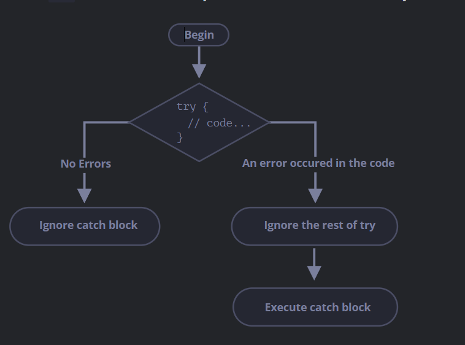

Error handling, "try...catch"
the syntax Try...catch i used to detect where is the mistake and let where
the mistake occur instead of dying or crashing. It allows us catch errors
in way more comfortable
the steps it follows are:
- Try to execute the try {...} code
-
then catch (err) is avoided if there aren't errors, try goes on skipping
catch
-
if an error is founded, try code is stopped and skip to catch code.
catch(error) we can call the variable any name, this value hols the
error object
